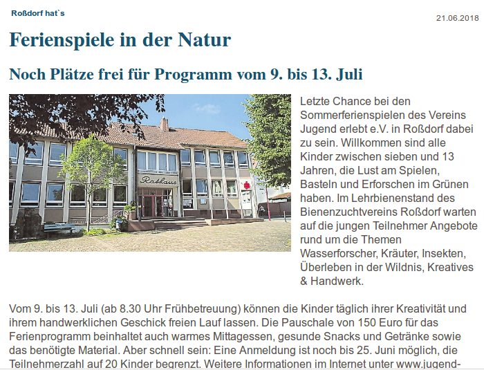

Das Orchester Roßdorf ist ein sinfonisches Laienorchester. Unser noch junges Orchester besteht seit Herbst 2017, als sich zum ersten Mal eine Gruppe interessierter Laienmusiker zusammenfand. Schnell zeigte sich, dass wir die gleichen Erwartungen hatten: in netter Atmosphäre unter fachkundiger Anleitung schöne Stücke erarbeiten! Inzwischen besteht das Orchester aus ca. 25 Mitgliedern. Ob jung oder alt spielt keine Rolle – alle Altersgruppen können mitspielen. Voraussetzung sind gute Kenntnisse auf dem Instrument (Holz-, Blech- oder Streichinstrument) und Spaß am gemeinsamen Musizieren.
Unsere Stückauswahl umfasst regelmäßig Werke aus unterschiedlichen Epochen von Barock bis Filmmusik. Seit 2018 ist das Orchester ein Teil der Musikgruppen der evangelischen Kirche Roßdorf. Wir haben zwei Arbeitsphasen pro Jahr mit einem Auftritt im Winter und einem Sommerkonzert, sowie ein bis zwei Auftritte im Gottesdienst über das Jahr verteilt. Weitere Mitspieler sind willkommen!
Anja Kempken studierte Schulmusik in Hannover, im Anschluss folgte ein Klavierstudium in Darmstadt. Sie besuchte Kurse für Orchesterdirigieren in Dresden bei Milko Kersten und Hans-Peter Preu. Vier Jahre lang leitete sie den Kirchenchor der evangelischen Kirche in Weiterstadt. Durch ihre Arbeit mit verschiedenen schulischen Musikensembles entstanden bereits mehrere Arrangements für Orchester aus den Bereichen Pop- und Filmmusik. Anja Kempken ist Musiklehrerin an einem Darmstädter Gymnasium.
Die Proben finden 14-tägig statt. Der Wochentag wechselt zwischen Donnerstag und Freitag. Probenbeginn ist 19.30 Uhr, Probenende 21.30 Uhr. Probenort ist das Gemeindehaus (Elisabeth-Haus) der evangelischen Kirche in Roßdorf, Eingang über den Hof direkt hinter der Kirche. In den Schulferien finden keine Proben statt. Den aktuellen Probenplan finden Sie unter Termine.
Do, 06.09.18
Fr, 21.09.18
Do, 18.10.18
Fr, 02.11.18
Do, 15.11.18
Fr, 30.11.18
Do, 13.12.18
Fr, 18.01.19
Do, 31.01.19
19:30 Streicher
21:15 alle
19:30 Bläser
21:15 alle
19:30 Streicher
21:15 alle
19:30 Bläser
21:15 alle
19:30 alle
19:30 alle
19:30 alle
19:30 alle
19:30 alle
Saal
Saal
Saal
Saal
Saal
Saal
Saal
Saal
Saal
Januar 2019 Auftritt im evangelischen Gottesdienst
todo: austauschen wenn das DA endlich mal den artikel veroeffentlicht!
Anja Kempken
Auf dem Wingert 14
64380 Roßdorf
anja.kempken[at]online.de